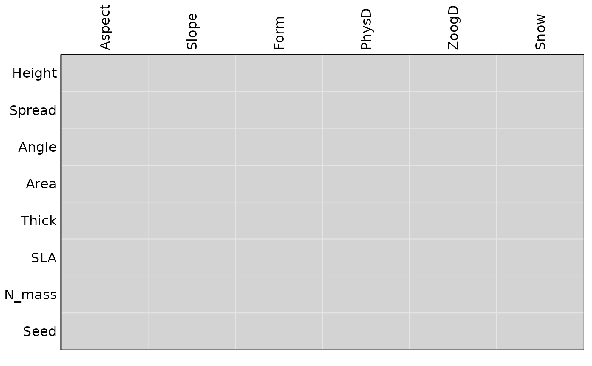

Functions to combine and adjust the outputs 3-table methods
combine.4thcorner.RdFunctions to combine and adjust the outputs of the fourthcorner and
randtest.rlq functions created using permutational models 2 and
4 (sequential approach).
Usage
combine.randtest.rlq(obj1, obj2, ...)
combine.4thcorner(four1,four2)
p.adjust.4thcorner(x, p.adjust.method.G = p.adjust.methods,
p.adjust.method.D = p.adjust.methods, p.adjust.D = c("global",
"levels"))Arguments
- four1
an object of the class 4thcorner created with modeltype = 2 (or 4)
- four2
an object of the class 4thcorner created with modeltype = 4 (or 2)
- obj1
an object created with
randtest.rlqand modeltype = 2 (or 4)- obj2
an object created with
randtest.rlqand modeltype = 4 (or 2)- x
an object of the class 4thcorner
- p.adjust.method.G
a string indicating a method for multiple adjustment used for output tabG, see
p.adjust.methodsfor possible choices- p.adjust.method.D
a string indicating a method for multiple adjustment used for output tabD/tabD2, see
p.adjust.methodsfor possible choices- p.adjust.D
a string indicating if multiple adjustment for tabD/tabD2 should be done globally or only between levels of a factor ("levels", as in the original paper of Legendre et al. 1997)
- ...
further arguments passed to or from other methods
Details
The functions combines the outputs of two objects (created by
fourthcorner and randtest.rlq functions) as described in
Dray and Legendre (2008) and ter Braak et al (2012).
Value
The functions return objects of the same class than their argument. They simply create a new object where pvalues are equal to the maximum of pvalues of the two arguments.
References
Dray, S. and Legendre, P. (2008) Testing the species traits-environment relationships: the fourth-corner problem revisited. Ecology, 89, 3400--3412.
ter Braak, C., Cormont, A., and Dray, S. (2012) Improved testing of species traits-environment relationships in the fourth corner problem. Ecology, 93, 1525--1526.
Author
Stéphane Dray stephane.dray@univ-lyon1.fr
Examples
data(aravo)
four2 <- fourthcorner(aravo$env, aravo$spe, aravo$traits, nrepet=99,modeltype=2)
four4 <- fourthcorner(aravo$env, aravo$spe, aravo$traits, nrepet=99,modeltype=4)
four.comb <- combine.4thcorner(four2,four4)
## or directly :
## four.comb <- fourthcorner(aravo$env, aravo$spe, aravo$traits, nrepet=99,modeltype=6)
summary(four.comb)
#> Fourth-corner Statistics
#> ------------------------
#> Permutation method Comb. 2 and 4 ( 99 permutations)
#>
#> Adjustment method for multiple comparisons: holm
#> Test Stat Obs Std.Obs Alter Pvalue Pvalue.adj
#> 1 Aspect / Height r -0.045735104 -0.96624375 two-sided 0.29 1.00
#> 2 Slope / Height r 0.094917344 1.86230853 two-sided 0.07 1.00
#> 3 Form / Height F 15.219879474 2.29183526 greater 0.04 1.00
#> 4 PhysD / Height r 0.113164322 1.69033086 two-sided 0.11 1.00
#> 5 ZoogD / Height F 15.227717714 1.20321258 greater 0.16 1.00
#> 6 Snow / Height r -0.271739531 -2.52978979 two-sided 0.02 0.70
#> 7 Aspect / Spread r -0.044170141 -1.62898342 two-sided 0.09 1.00
#> 8 Slope / Spread r -0.017325425 -0.47266091 two-sided 0.66 1.00
#> 9 Form / Spread F 5.548173196 0.17936671 greater 0.29 1.00
#> 10 PhysD / Spread r -0.051680330 -0.88308381 two-sided 0.45 1.00
#> 11 ZoogD / Spread F 0.120114487 -0.96996271 greater 0.91 1.00
#> 12 Snow / Spread r 0.065634673 0.68145967 two-sided 0.52 1.00
#> 13 Aspect / Angle r -0.090837201 -1.95711739 two-sided 0.05 0.90
#> 14 Slope / Angle r 0.100281966 1.85247146 two-sided 0.08 1.00
#> 15 Form / Angle F 30.664664234 8.20380824 greater 0.01 0.48
#> 16 PhysD / Angle r 0.221380084 4.45298482 two-sided 0.01 0.48
#> 17 ZoogD / Angle F 28.051040522 4.25447080 greater 0.01 0.48
#> 18 Snow / Angle r -0.269613756 -5.45241530 two-sided 0.01 0.48
#> 19 Aspect / Area r 0.031237858 0.86265218 two-sided 0.42 1.00
#> 20 Slope / Area r -0.003864605 -0.02808969 two-sided 0.99 1.00
#> 21 Form / Area F 13.609309880 2.41027867 greater 0.03 0.99
#> 22 PhysD / Area r -0.134371361 -2.33180033 two-sided 0.03 0.99
#> 23 ZoogD / Area F 49.672266332 12.02186552 greater 0.01 0.48
#> 24 Snow / Area r -0.024574466 -0.58712318 two-sided 0.54 1.00
#> 25 Aspect / Thick r -0.058466142 -1.82814528 two-sided 0.08 1.00
#> 26 Slope / Thick r 0.074151819 1.47814780 two-sided 0.16 1.00
#> 27 Form / Thick F 14.204346501 2.31563972 greater 0.04 1.00
#> 28 PhysD / Thick r 0.143161734 2.04752378 two-sided 0.04 1.00
#> 29 ZoogD / Thick F 2.825887968 0.37765865 greater 0.21 1.00
#> 30 Snow / Thick r -0.154660144 -1.39680167 two-sided 0.17 1.00
#> 31 Aspect / SLA r -0.007694551 -0.22374959 two-sided 0.79 1.00
#> 32 Slope / SLA r -0.235864886 -3.80975055 two-sided 0.01 0.48
#> 33 Form / SLA F 100.787472071 15.48468684 greater 0.01 0.48
#> 34 PhysD / SLA r -0.275524984 -4.57474321 two-sided 0.01 0.48
#> 35 ZoogD / SLA F 0.984301951 -0.82366906 greater 0.83 1.00
#> 36 Snow / SLA r 0.481181824 7.18949139 two-sided 0.01 0.48
#> 37 Aspect / N_mass r -0.061575524 -1.25032861 two-sided 0.18 1.00
#> 38 Slope / N_mass r -0.201308154 -3.46660466 two-sided 0.01 0.48
#> 39 Form / N_mass F 70.042280400 12.64322384 greater 0.01 0.48
#> 40 PhysD / N_mass r -0.212434381 -3.89483901 two-sided 0.01 0.48
#> 41 ZoogD / N_mass F 10.300092724 0.38116422 greater 0.28 1.00
#> 42 Snow / N_mass r 0.429271163 6.56150682 two-sided 0.01 0.48
#> 43 Aspect / Seed r 0.011598435 0.72896804 two-sided 0.48 1.00
#> 44 Slope / Seed r 0.077073974 1.82644014 two-sided 0.10 1.00
#> 45 Form / Seed F 5.561841954 0.32844232 greater 0.23 1.00
#> 46 PhysD / Seed r 0.078156305 1.29105104 two-sided 0.22 1.00
#> 47 ZoogD / Seed F 3.369068338 1.13382049 greater 0.09 1.00
#> 48 Snow / Seed r -0.177640721 -1.97494274 two-sided 0.06 1.00
#>
#> ---
#> Signif. codes: 0 ‘***’ 0.001 ‘**’ 0.01 ‘*’ 0.05 ‘.’ 0.1 ‘ ’ 1
plot(four.comb, stat = "G")
